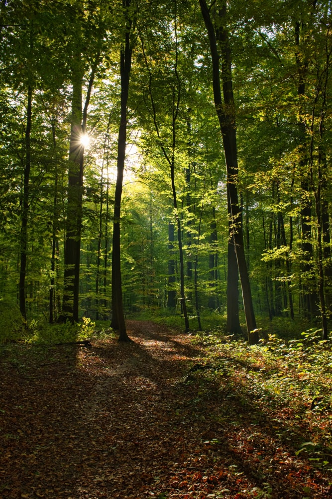
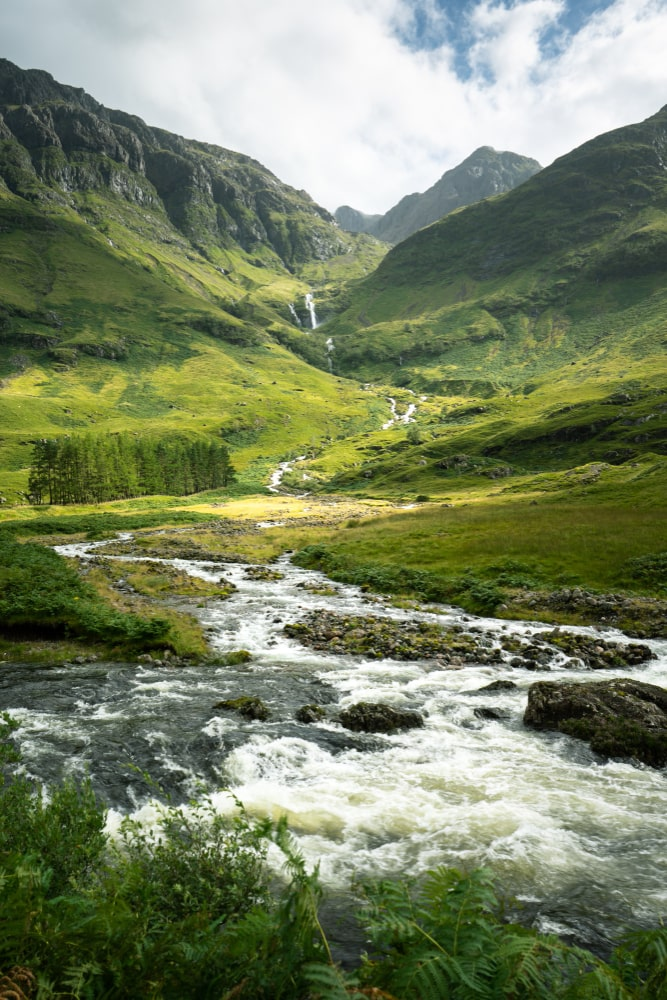

By bearfotos
 By wirestock
⚠️All Images Are from freepik⚠️
You must credit the image to its author:
In order to use a psd or a part of it, you must credit the author, so we can continue to create new graphic resources every day.
How can I credit the author?
For websites: Please, copy this code on your website to accredit the author:
You are free to use this image:
For both personal and commercial projects and to modify it.
In a website or presentation template or application or as part of your design
You are not allowed to:
Sublicense, sell or rent any of FreePik Contents (or a modified version of FreePik Content).
Distribute FreePik Contents unless it has been expressly authorized by FreePik.
Include FreePik Contents in an online or offline database or file.
Offering FreePik designs (or FreePik --Contents modified versions) for download.
To use any of Freepik's images as the only or main theme of your designs.
Acquire the copyright of FreePik Contents.